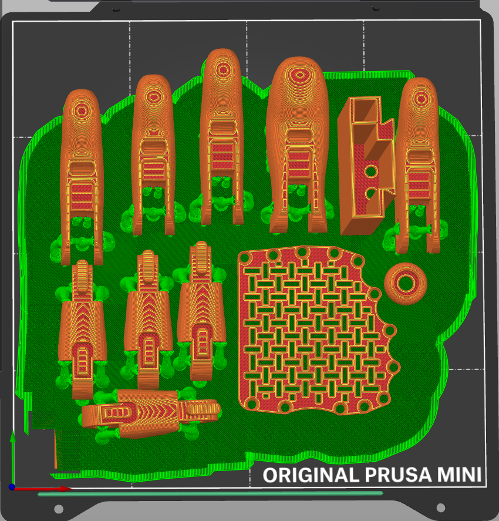
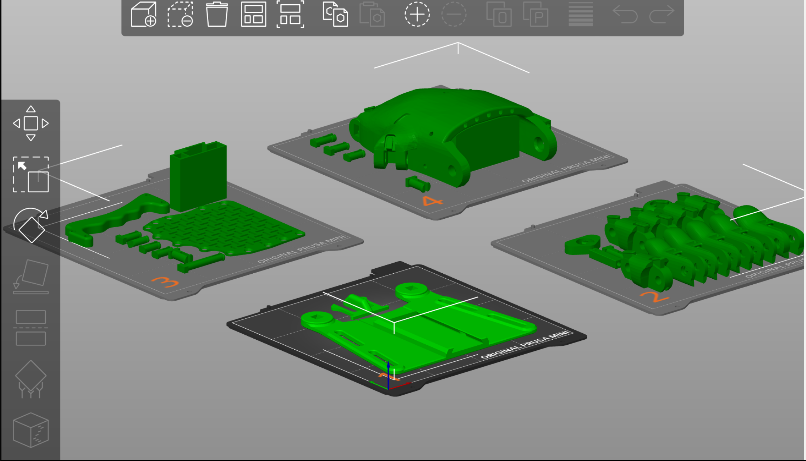
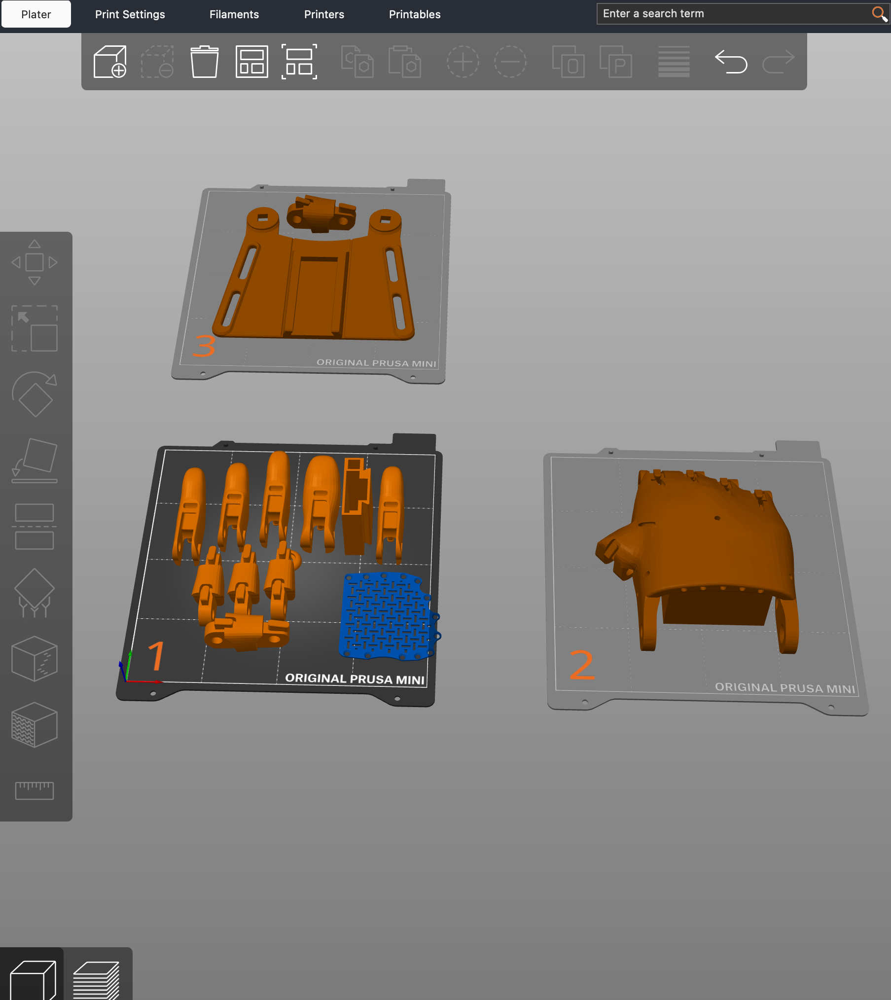
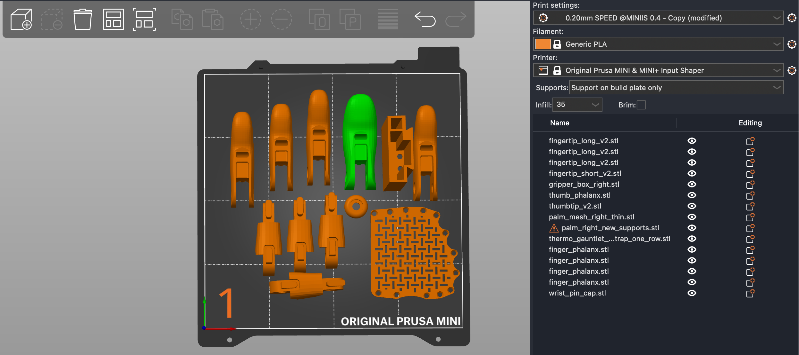
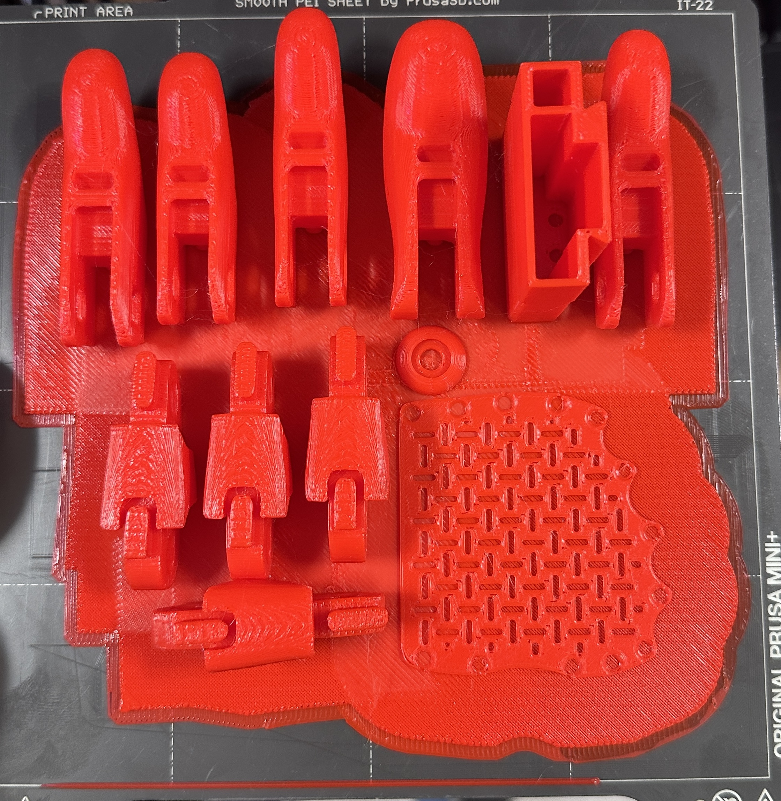
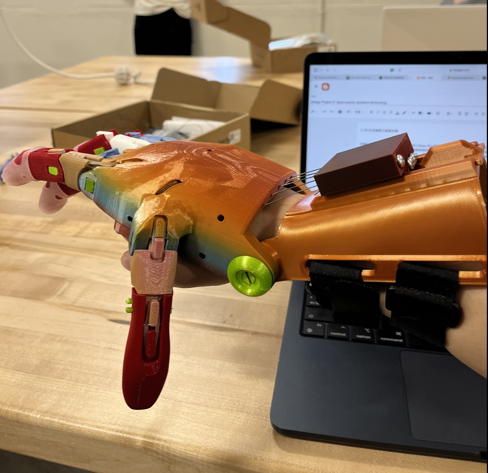

Part 2: 3D Printing & assembling the model
Once the file was downloaded from e-NABLE I imported them into Prusa slicer and sorted the pieces accordingly on individual printer bases. I was then tasked with scaling the parts to 150% to allow for proper fitment once the building process was underway. This part of the process proved challenging as arranging the pieces so that they would all fit together in the minimal spaces of the Prusa MINI+ 3D base plates was not easy. To overcome this challenge I used grouping of similar parts to allow for an optimal printing process. Also, I worked with my partner to see what she was printing so that it could save us time as we would have to print fewer parts.

After some time of shifting the pieces around I was able to successfully arrange them on the bases of the printer. One edit that I made to the print layout prior to exporting the file was I added a raft layer on base 1 to make sure the fingers had proper stability during printing as they were smaller parts. The raft layer has various benefits such as making the removal process easier and enhancing the object adhesion to the bed of the printer.
Finally, for the print settings, I used an infill of 15%. This percentage determines how much of the internal volume of the print will be filled with the PLA filament. 15% is a great percentage as it allows the print to remain light and simultaneously provide strength for the print.
Prusa Layout
 Printing settings

For the height of the individual layers, I used .20mm. This is because it allows for a great balance between print quality and print time. By adjusting the height of the layers those two factors change co-dependently. In this relationship increasing the layer height, decreases the print time as there are fewer layers that need to be printed. However, by doing so this causes a decrease in print quality as the individual layers are more prominent so it can result in a rougher print overall. Decreasing the layer height produces the opposite effect of the relationship listed above.
As for the material selection I chose generic PLA as very easy to use as it requires a low printing temperature and is also widely available in many different colors. Also, it has good adhesion to the base minimizing the probability of print detachment during printing.
For the supports, I chose support on build plate only for two specific reasons. For one it allows the removal process to be much easier as the support binds underneath the model so there is no worry about damaging and scratching the print. The second reason is provides quicker print times and simplistic structural support that does not require many layers.
The infill was set to 35 because this model needed to be solid so a higher level of infill provides a stronger model. The infill acts essentially as the framework for the internal structure of the model, preventing weakness.
Assembly/Print results
The prints came out very good in terms of quality as using the open-source file allowed for a print that already had optimized settings to enable a smoother assembly process. Also because open source files are available to anyone, the potential errors that could potentially arise importing your own .stl file are caught and resolved by other users. So by the time you go to print the files are highly refined as they constantly improve over time.
The assembly process was now underway and we started by first removing the individual pieces of the hand from the excess raft layer. This part of the process was very difficult as the density of the pieces themselves made it very challenging to remove them. A fix to this problem was to use pliers to get a better grip on the parts, and then by providing tension to the raft layer in one hand and pulling the piece off in the other I was able to get the parts off.

After getting the parts off of the raft we made sure to first count all of our pieces before we began building and then arranged them all in the order of assembly. To guide us through the assembly process my partner and I utilized mainly a YouTube tutorial on how to construct the hand itself. We also referred to the manual at times when we got lost and had to retrace our steps. The most difficult part about the assembly was definitely stringing the finger as where to tie the knots was sometimes unclear. To resolve this issue I had to reference another YouTube tutorial that did one finger at a time as the first one skipped through the stringing process. I then put the video in .5x speed to see exactly how the cords were being threaded.
Overall, the assembly process was very straightforward and my partner and I took turns by one person at times working on trying to assemble white the other person referred to the instructions to act as a guide. We completed the hand at the end of this process and had full functionality.
